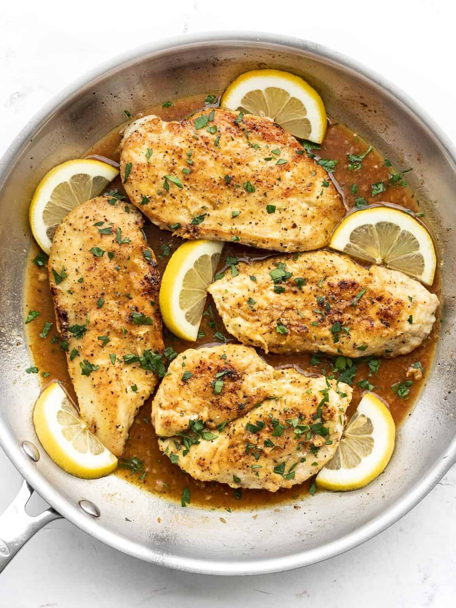

Lemon Pepper Chicken

Are you in a chicken rut? Cooking the same ol’ boring chicken breast week after week? Yeah, then you need to try this Easy Lemon Pepper Chicken ASAP. It’s savory, tart, and peppery, and has a delicious pan sauce that you’ll want to spoon over your entire plate!
Ingredients
- 2 boneless skinless chicken breasts (about 1.3 lbs. total)
- 2 Tbsp all-purpose flour
- 1 Tbsp lemon pepper seasoning
- 1 Tbsp cooking oil
- 1 clove garlic, minced
- 1/2 cup chicken broth
- 1 Tbsp butter
- 1 tsp lemon juice
- 1 Tbsp chopped fresh parsley (optional)
- 1/8 tsp freshly cracked black pepper
Recipe instructions
- Use a sharp knife to carefully fillet the chicken breasts into two thinner peices (or use thin-cut chicken breasts).
- Combine the flour and lemon pepper seasoning in a bowl. Sprinkle the mixture over both sides of the chicken breast pieces and then rub it in until the chicken is fully coated.
- Heat the cooking oil in a large skillet over medium. When the skillet and oil are very hot, add the chicken and cook on each side until golden brown (about 5 minutes per side). Remove the cooked chicken to a clean plate and cover to keep warm.
- Add the butter and minced garlic to the skillet and sauté for about one minute.
- Add the chicken broth to the skillet and whisk to dissolve all the browned bits from the bottom of the skillet. Add the lemon juice and allow the sauce to simmer in the skillet for 3-5 minutes, or until it has reduced slightly. Taste the sauce and add salt if needed (I did not add any).
- Finally, return the chicken to the skillet and spoon the sauce over top. Allow the chicken to heat through. Season with a little freshly cracked pepper and fresh chopped parsley (optional), then serve.
Return to the main page